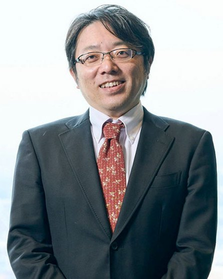

01
市場で価値を語る
習いごと系のFC本部
上場時から逆算して、加盟店が取れる見込みを固めました。自社の成長を、市場の伸びとシェアで語り直しています。会社の価値が見えるようになり、100億円へのエンジンとして数億円を調達しました。
Co-Net management株式会社（コネットマネジメント）
いい商品・サービスでも、ある大きさで伸びが止まる。
会社の伸び方は、切り替えられる。
稼ぎ方とお金の組み方を変えて、次の段階へ。
良い事業を、社会に届く大きさまで。
代表取締役 斎藤暢人（さいとう のぶと）
NUMBERS
15社超
売上100億円以上の支援実績
10社超
上場・エクイティ調達企業の支援実績
200社超
25年間の支援企業
5億円超
直近2年の資金調達額
前職を含め、代表の斎藤暢人が関わった実績です。数字は2026年11月時点です。
CASES
伸び方を切り替えた6つの事例です。社名は伏せ、業種と規模で紹介します。
横に送ると、次の事例を読めます。
APPROACH
戦略の進め方
まず、2〜5年後の会社の姿を描きます。そこから逆算し、今やることに優先順位をつけます。資金調達は苦手な会社が多いため、当社が直接担います。組織、人材、AIなど、成長に要ることは領域を問わず進めます。
01
2〜5年後の姿
売上と会社の評価を、数字で描きます。
02
逆算と優先順位
今やることと、後に回すことを決めます。
03
実行
資金調達やM&Aは、当社が自ら手を動かします。
PARTNERS
領域ごとに、専門のパートナーと組んで実行します。
AIの導入
AIを業務に組み込み、現場で使える形にします。
営業の教育
売れる流れを型にして、営業の力を上げます。
階層別の教育
役職ごとに、次の役割を担う力を育てます。
投資
投資家と組み、成長に要る資金を厚くします。
POSITION
立ち位置
| 観点 | 当社 | 会計士・税理士（FAS含む） | バックオフィス支援 |
|---|---|---|---|
| 扱う数字 | 3〜5年後の売上と評価を設計する | 過去の実績を確かめる | 日々の取引を回す |
| 問い | どうすれば次の段階に届くか | 数字は正しいか | 回っているか |
| M&A | 買う先を決め、条件を組み、交渉し、統合後に稼がせる | 財務・税務DD、株価の算定 | 統合後の事務 |
| 資金調達 | エクイティとデットで成長資金を調達する | 決算と監査の対応 | 資料の数字を整える |
| 関わり方 | 外部取締役として、計画と実行を進める | 外部の専門家 | 外注先 |
成長プロジェクトは、会計士、弁護士、金融機関、社内の管理部門と一緒に進めます。それぞれの持ち場を一つの計画にまとめ、前へ進めるのが当社の持ち場です。
ENGAGEMENT
関わり方
外部取締役
外部取締役として、成長計画をつくり、実行を進める
プロジェクトの責任者
プロジェクトの責任者として、資金調達やM&Aをやり切る
どちらも、計画から実行まで当社が担います。期間と進め方は、お話を伺ったうえで決めます。
PROFILE

代表取締役
斎藤暢人さいとう のぶと
経営コンサルタントとして12年、九州の上場企業を中心に支えました。その後は事業会社で、新規事業の立ち上げと経営に携わりました。いまは福岡を拠点に、成長を目指す経営者と仕事をしています。
1997年
名古屋大学に入学
2002年
タナベ経営（現タナベコンサルティング）に入社。九州の上場企業を中心にコンサルティングを担当
2014年
富士ゼロックスシステムサービス（現富士フイルムシステムサービス）。R&Dディレクター、新事業開発部長として新規事業を立ち上げ
2020年
ZUUに入社。メディア本部長代理、BtoB事業管掌執行役員、金融・コンサルティングカンパニーCSO兼アライアンス管掌執行役員を歴任
2025年1月
Co-Net management株式会社 創業／代表取締役
COMPANY
| 社名 | Co-Net management株式会社（コネットマネジメント） |
|---|---|
| 設立 | 2024年7月 |
| 創業 | 2025年1月 |
| 事業内容 | 経営コンサルティング、オンラインサービス、不動産投資・管理 |
| 代表者 | 斎藤 暢人（さいとう のぶと） |
| 所在地 | 福岡市中央区 |
| プレスリリース | PR TIMES |
CONTACT
お問い合わせ
紹介を受けた方、紹介を考えている方のご相談を受け付けています。ご紹介者がいれば、お問合せ内容にお名前を添えてください。内容を確かめ、斎藤から直接ご連絡します。
Googleフォームが別のタブで開きます。